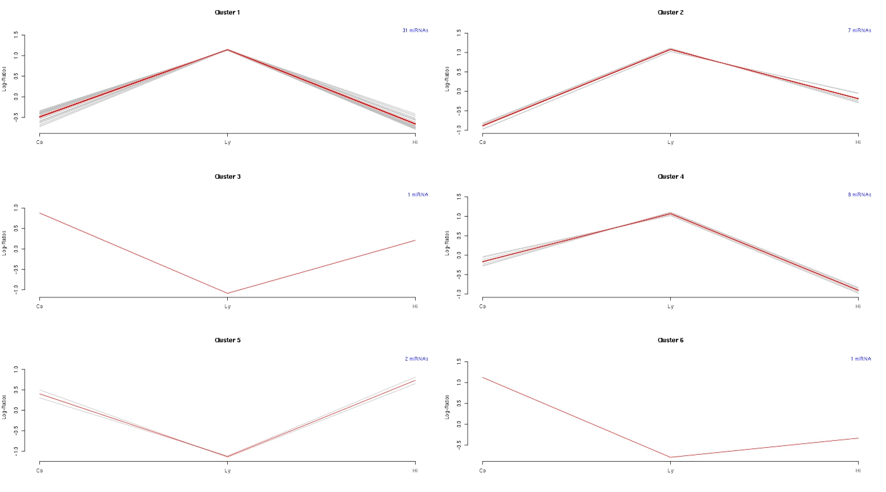

Pathway Analysis
Overview
Traditionally, pathway analysis would look at the genes in a given pathway and see how well they fit the the list of genes used as an input. miRNAs give a much lower resolution indication of what's going on in biological systems as it maps the miRNA molocule to associated genes (of which this can be hundereds per miRNA) and thus the input gene list can easily be in the thousands. Providing a gene list of that magnitude into a pathway analysis would more than likely yield high level biological processes, such as Cancers or cell cycle processes, which misses the details that you're looking for.
While there is always the option of running an Ingenuity Pathway Analysis on this dataset, there are some limited methods to carry out. Firstly, Diana miRNA Pathway Analysis does the traditional pathway analysis and you can use this list of text files to run the analysis on your differentially expressed miRNA lists. (There isn't a straightforward way to automate this analysis other than on their website, sorry!).
The image below shows the clustered expression profiles from the first contrast (Control - Lymphoma), and can be carried out on the rest of the contrasts if you think it would be useful to look into miRNA signatures.
If you choose to go further down the clustering route, there is a form of GSEA (Gene Set Enrichment Analysis), while it's quite a complicated process, it may provide a better resolution than the regular pathway analysis, I'd have to look into it in more detail.